Overview
For Solaris MkIII mini, the combustion chamber and nozzle had to withstand long burn times and low
chamber pressures while keeping mass and manufacturing complexity under control. I led the
design and CAD of two regeneratively cooled nozzles intended for metal additive manufacturing,
replacing a conventional ablative graphite insert surrounded in bakalite phenolic with an actively cooled, reusable thread on nozzle.
The nozzles integrate internal helical cooling channels, fluid manifolds and mounting interfaces
into a single printed part. The geometry was iterated alongside in-house performance simulations
and cooling analysis using numerical analysis such as CFD and FEA to keep wall temperatures within material limits while maintaining an efficient
expansion contour and minimal mass. Because one of the varients used LOX it was critical to keep LOx under its vaporization temperature, the second iteration was more forgiving due to it using water.
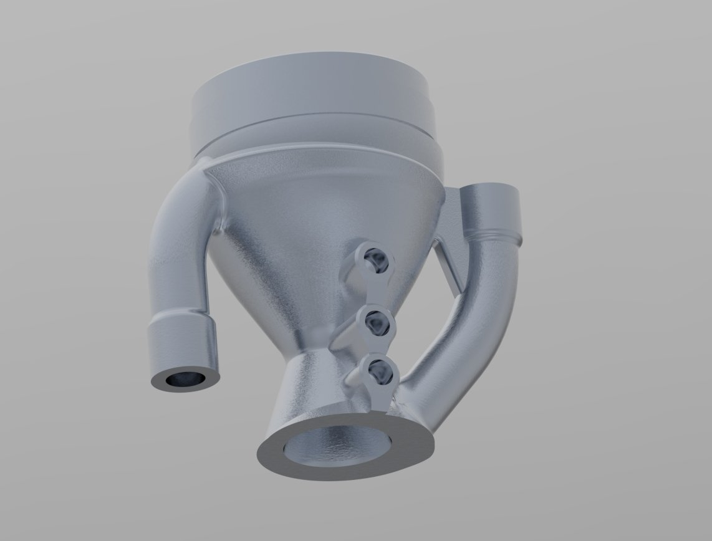
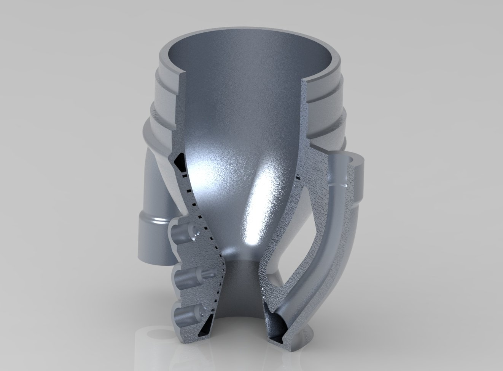
Design Requirements
The regen nozzle design was driven by a combination of propulsion performance, thermal limits and
manufacturing constraints from metal additive processes.
- Operate with Solaris MkIII mini at the target chamber pressure and expansion ratio.
- Keep wall temperatures within allowable limits for the selected alloy AlSi10Mg and safety factor of 2.
- Integrate with the combustion chamber and fluids set up.
- Use channel geometries that can be reliably manufactured by metal 3D printing.
- Minimise mass without compromising strength or fatigue life.
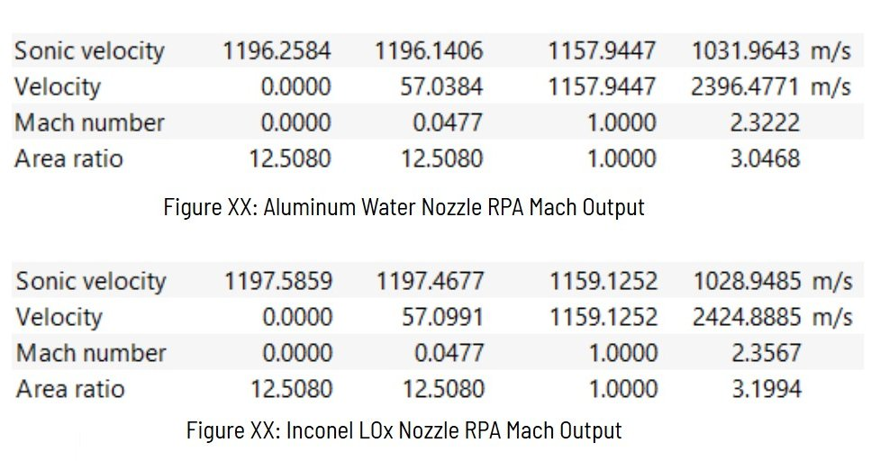
PERFORMANCE
Nozzle contour, throat, exit and converging angles sized to match target expansion ratio and thrust requirements from engine sims.
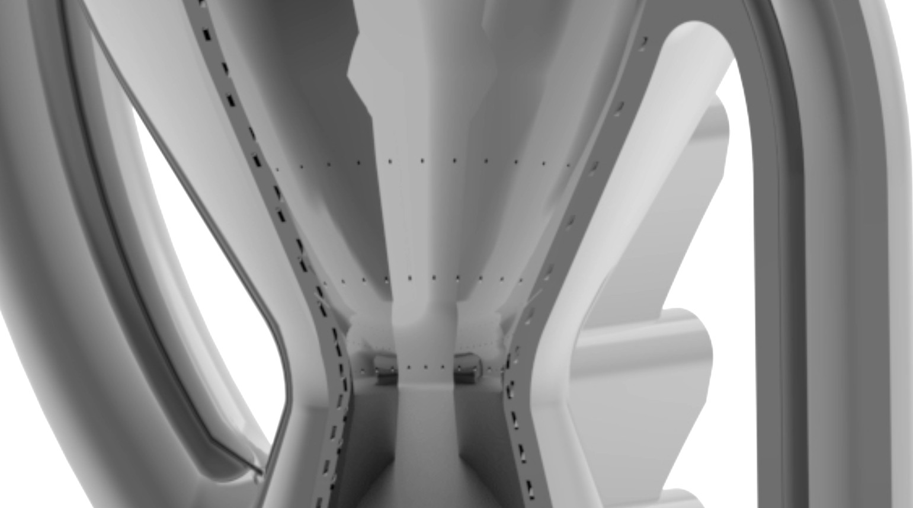
THERMAL LIMITS
Cooling architecture designed to keep hot-gas wall temperatures inside material capability using helical cooling channels & film staggerd film cooling ports.
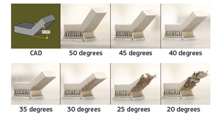
MANUFACTURING CONSTRAINTS
Channel size, overhangs and wall thickness tuned for AlSi10Mg alloy additive manufacturing constraints.
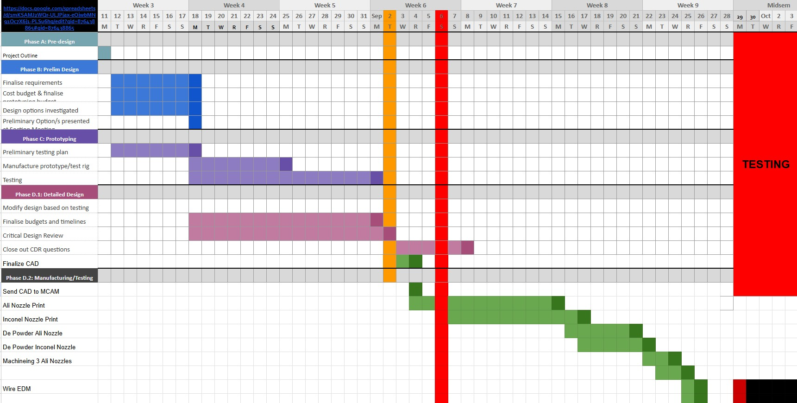
TIMELINES
Design and analysis iterations completed within project timelines to align with overall engine development and testing regime schedule.
Regenerative & Film Cooling
The nozzle uses a network helical cooling channels wrapped around the entire nozzle geometry.
They're designed in a manner that cooling in prioritized at the nozzle throat where heat fluxes are highest,
and a higher pressure drop is acceptable for the cooling benifits.
Coolant enters from the bottom manifold, passes through the channels flowing opposite to the hot gas flow.
It then exits through the top manifold, where it can be routed back to the injector or expelled overboard somewhat similar to an Open Cycle engine.
Film cooling ports are also integrated into the nozzle contour, stratigically placed at locations where the heat flux was the heighest.
allowing a small amount of LOX or water to be bled off from the main flow through 0.8mm ports, forming a thin protective layer along the inner wall.
This further reduces wall temperatures and thermal stresses, especially in the converging section before the throat
The channel layout was explored parametrically in CAD, balancing pressure drop, flow distribution
and local wall thickness. High curvature regions near the throat were given higher channel height and lower width
to maximise cooling effectiveness,
while the bell and converging section uses wider and thinner channel, trading some cooling performance for reduced pressure drop and mass.
Geometry & CAD Implementation
The nozzle contour is based on an axisymmetric bell profile matched to the engine operating point,
the crutial dimensions were obtained from the Rocket propulsion Analysis (RPA) model.
The CAD model parametrically links key dimensions such as throat radius, converging length and
wall thickness, making it straightforward to re-run computational when the engine configuration changes.
Cooling channels were modelled as swept cuts following guide curves around the contour. Ribs and
outer jackets were then built around these channels to provide stiffness and external connection
surfaces. Particular attention was paid to transitions at the throat band and at the inlet and outlet
manifolds to avoid sharp corners that are difficult to print and known for causing stress concentrations.
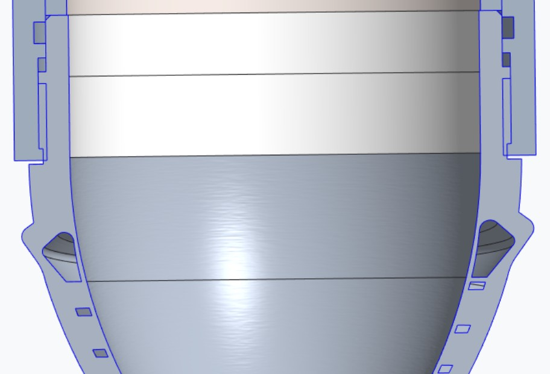
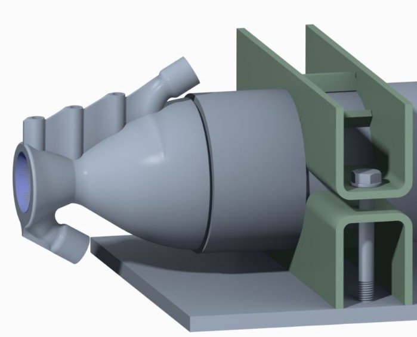
Thermal & Structural Analysis
Heat flux distributions from engine-level analysis were mapped onto the nozzle inner wall using combustion modelled with CFD and
used as inputs for thermal CFD simulations. The cooling channels were approximated as internal
convection boundaries with film coefficients estimated from coolant flow conditions.
Resulting wall temperature fields were then combined with internal pressure loads and external
constraints for structural FEA. This checked both local stress levels in the thin throat region and
global stiffness for integration with the rest of the engine assembly.
A numerical solver script was also used to rapidly iterate channel dimensions and flow rates to converge on a design that met thermal and structural requirements without having to re-run the full analysis sweet each time.
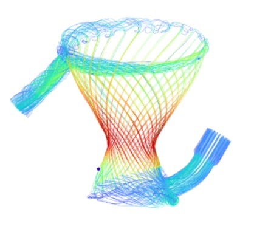
THERMAL MODEL
Temperature predictions along the contour used to verify that peak wall temperatures stay within limits.
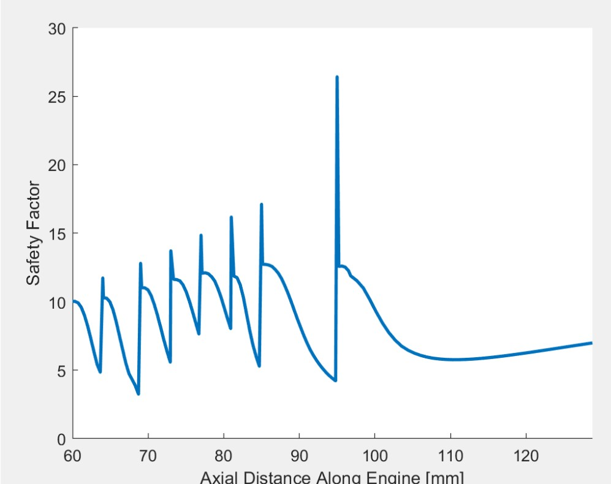
STRESS ANALYSIS
Combined pressure and thermal loading checked against yield and fatigue criteria in critical regions.

INTERFACE STIFFNESS
Deflection at mounting interfaces evaluated to keep misalignment with the chamber within tolerance.
Manufacturing Strategy
From the outset the geometry was constrained by metal additive manufacturing rules: minimum
channel diameters, overhang limits, powder removal paths and build orientation were all considered
while modelling. The nozzle body is designed to be printed as a single piece, with supports located
away from critical sealing and flow surfaces, or able to me machined away to ensure a smooth finish that can be sealed on.
Internal powder removal is enabled by manifolds and access ports at inlet and outlet plenums. Wall
thicknesses and rib spacing were tuned to avoid large unsupported spans, the final design only required the top manifold inlet port to be supported. This ensured print time and
cost we're reasonable while still taking advantage of the design freedom offered by additive manufacturing.
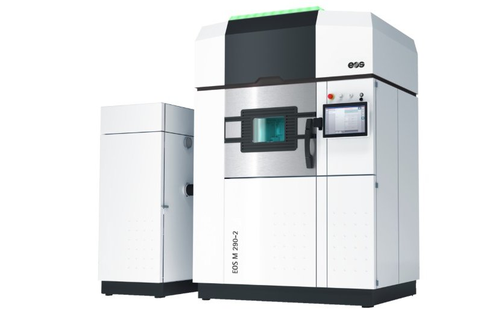
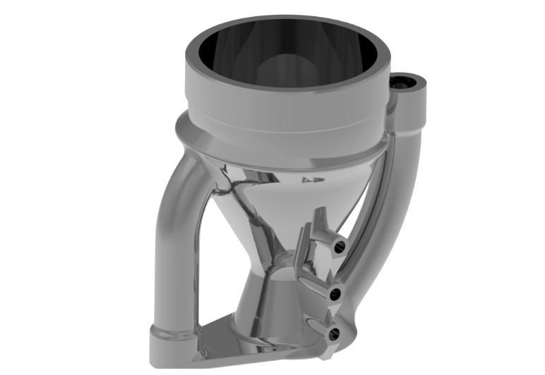
Testing & Next Steps
Unfortunately due to project timing constraints the regen nozzles were not able to be printed and Solaris MkIII mini used the ablative graphite nozzle.
However, plans are in place to print and test both varients in future hot-fire tests, with a focus on validating thermal performance and manufacturability.
while the nozzle were'nt used in the initial test firings,
the design and analysis work has laid the groundwork for future regeneratively cooled hardware on the team,
as now there is a large knowledge base and pre made parametric CAD to build upon.
Future work will also look to integrate more advanced cooling channel geometries, such as conformal channels which are even more opimised to the geometry and
follow the heat flux contours more closely, and further optimise the film cooling port placement and sizing.
Additionally, fatigue testing and analysis will be conducted to ensure long-term durability of the nozzle under repeated thermal cycling and thrust loading.
Outcome & Reflection
This project pulled together nozzle design, regenerative & film cooling, metal additive manufacturing constraints and
structural analysis into a single CAD model that can move directly toward manufacture. It also
provided a foundation for future regeneratively cooled hardware on the team, including manifolds
and other hot-section components which eventually will be required for higher performance engines, and possible turbo pumps.
Looking back, more time could have been spent on exploring alternative cooling channel geometries and
layouts, as well as optimising the film cooling port placement and sizing using numerical methods and parametric generative topology optimization.
Additionally, further validation of the thermal and structural models through experimental testing would
have strengthened confidence in the design for future iterations.
Overall, this project was a valuable learning experience in advanced nozzle design and additive manufacturing for rocket engines,
usage of RPA for performance prediction and a deeper understanding of CREO parametric CAD modelling.
It set the stage for more complex and higher performance propulsion systems in the future.
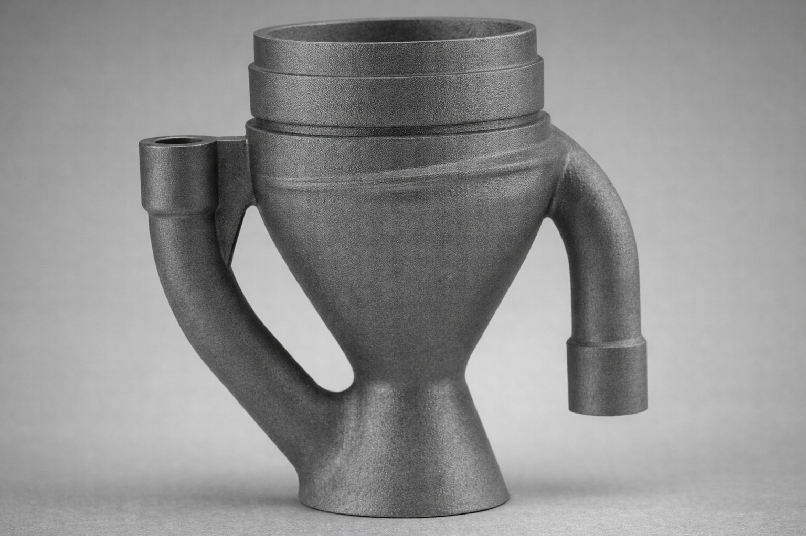